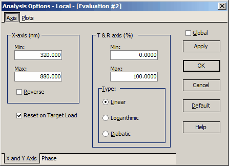

Additional Evaluation windows
Additional Evaluation windows
Navigation: OptiLayer Menu Commands > Analysis Menu >
Additional Evaluation windows
` <taper_wavefront_evaluation.html>`__ ` <idh_menu_analysis.html>`__ ` <integral_values_and_characteri.html>`__
It is possible to open additional Evaluation windows in OptiLayer. This is convenient when it is necessary to analyze spectral characteristics in different spectral ranges simultaneously, for example. Additional Evaluation windows have numbering at their headers, like Evaluation #2, and so on. This feature allows for enhanced analysis and comparison of different spectral ranges or other data sets within the software.

Plot and scale settings of additional Evaluation windows can be adjusted individually in OptiLayer. You can use the right-click pop-up menu of the corresponding window for this purpose. The Options dialog will allow you to customize the settings for each individual Evaluation window, similar to the one displayed below: Image of Options dialog for adjusting plot and scale settings in OptiLayer’s Evaluation windows This flexibility in customization provides users with the ability to tailor their analysis and visualization preferences for each specific Evaluation window, improving the overall user experience and efficiency in data analysis.

Note: the name of the active Evaluation window is displayed in the header, allowing you to check where modified settings will be applied. If you want to make a global change to plotting options, activate the Global checkbox at the top right of the dialog.